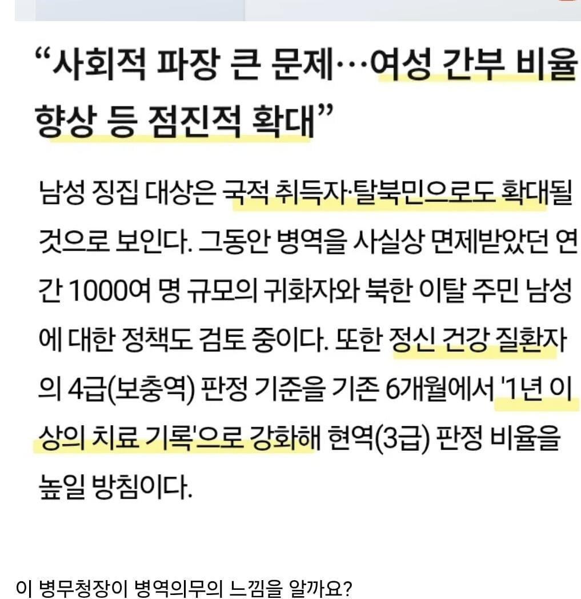

여성은 사회적 합의가 전혀 되지않아 징집은 불가능하지만 그외 나머지 남성들은 합의가 되었기에 모조리 군대로 끌고가겠다

여성은 사회적 합의가 전혀 되지않아 징집은 불가능하지만 그외 나머지 남성들은 합의가 되었기에 모조리 군대로 끌고가겠다
여성징병은 공감대 형성과 사회적 합의가 먼저라면서 왜 귀화자, 탈북민, 정신질환자 징병은 합의과정을 안거침??
그건 이미 합의해서?
짐의 의견이 곧 합의니라
ㅋㅋㅋㅋㅋㅋㅋㅋㅋㅋㅋㅋㅋㅋㅋㅋㅋ아씨 왤케 웃기지
잡았다 ai놈
보지대왕니뮤 ㄷㄷ
암 말기여도 군복무 하라고 데려가겠네 이젠.
아 실제로 그럴 뻔한 적이 있었구나?
그냥 군복무하면 시민권 주는걸로 하죠? 아싸리 제주도 무비자 입국자들도 하이패스로 육지 들어오게 하고 ㅇㅇ
여성징병은 국방부가 이미 옛날에 검토 다하긴함
문제는 검토만한거지뭐
지금당장 국방부가 한다고 발표한다고 달라질게없음
정치권에서 먼저 포문을 열어야 하는데
대체 누가 저걸 총대메고 자기가하겠다하겠음ㅋㅋㅋ
일단하면 최소 성별반은 표를 못받을게 뻔한걸
이게되려면 반발을 무시할만한 명분이 나와야 정치권도 움직일텐데 그정도 충격이 나오려면 최소 국지전쯤 되야할듯
지금 당장 여성징병이 힘든이유는 남성징병 시스템 자체도 일방적인 희생과 어거지가 섞인상태라 현대에 와서는 같은 논리를 들이밀기가 힘들거든
병역법 개정 사항
?? : 찾아보니까 병무청에서 밑바닥부터 올라온 병무행정 전문가이신데 ㅋㅋㅋㅋ 다들 혐오에 찌들아서 눈가리고 돌만 던지고 있네
?? : 대체 뭐가 문제임?? 1988년부터 병무청에서 일하셨는데 누구보다 전문 아닌가??
그런 전문가가 내놓은 결론
: 여성 징병은 안 하지만 간부는 확대함
: 정신이상자, 탈북자, 귀화자도 징집함
ㅋㅋㅋㅋㅋ
대단하신 개드립 스윗남분들 등판해주세요
아무튼 현역판정률 올리기 전문가도 전문가니까 조아쓰!
그런 소리 하는 새끼들 막상 지 입맛에 안 맞으면 암만 엘리트라도 무식한 새끼니 어쩌니 개지랄하잖아ㅋㅋㅋㅋ
추노청이라고 이름 바꿔라ㅋㅋㅋ
시발 간부는 왜 가능한건데 씨팔려나
탈북민은 왜 또 군대에 집어넣냐??
남자만 끌고가는거 윗대가리 씨발놈들때문이라 치자
대체 여자 징병은 안하면서 간부만 쳐앉히는 이유는 뭐임 대체?
예비군들 재입대 시킬 확률 vs 여성 군입대 시킬 확률
쉬었음 청년 재입대 추진 ㄱㄱ
그런 당신에게 실버아미 홈가드를
사람뽑아서 현장으로만 보내면 거기서 살던 죽던 지책임이 아니니깐 ㅋㅋㅋ
???:총력전을 원하는가!!!
아니 여성징병 안하는게 오히려 여성이 무능력자라서 차별받는건데 이걸 오히려 들고일어나야지ㅋㅋㅋㅋ
니네들 가성비 안나오니까 하지마 븅신들아 라고 나라가 외치는데 이게 차별이 아니고뭐임?
사실 남자들도 여성 징병 오히려 더 좆같음
따로 생활하면 모를까
독박 병영해도 혜택이 뒤따르면 모를까 니미
개씨발년들은 정신병자를 군대에 집어넣는게 어떤의미인지 모르니까 저딴 개소리하지ㅅㅂ
전쟁나서 나라 좆망직전에도 여성징집은 없을걸?
그때되면 개병신스윗딸바보새끼들이 애는 누가 낳아? 이지랄할거라서 ㅋㅋㅋ
아까 스윗남 새끼들 덧글 보니까 맞는듯 ㅋㅋㅋ
고아 징집 말하면서 군 복무의 형평성? 그런 얘기한 게 진짜 기괴했음
정상인이라면 고아 면제는 불공평하다고 하지 않아요 ㅅㅂ
2등 시민
탈북자? 귀화자? 는 좀 조심해야 하지 않나?
일단 난 합의했으니 당장 보내라ㅋㅋ
시발 시위가야함 이런게 무슨 병무청장이라고
일단 본인부터 ㄱㄱ 그럼 ㅇㅈ함
군대 가야하는 탈북민이 몇명이나 된다고 그걸 싹싹긁어가냐
언제 사회적 합의라는걸 했다고 ㅋㅋㅋㅋㅋㅋㅋㅋㅋ
한명이라도 반대하면 합의 실패임??
꼬우면 제발 시위해 한남들아
인터넷에서만 성내지 말고
인터넷에서만 지랄하니 씨알도 안먹히지
니네들이 사회적 합의한걸 어떻게 알아?